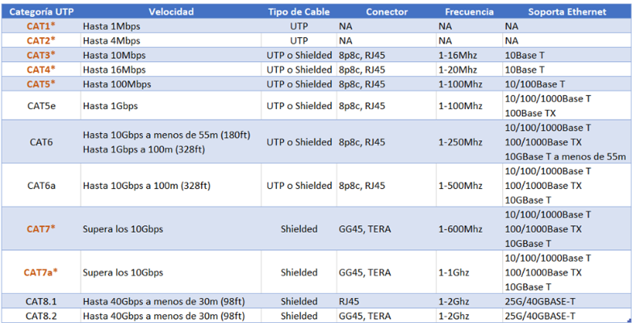
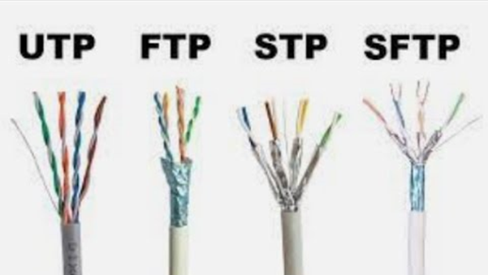
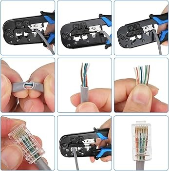
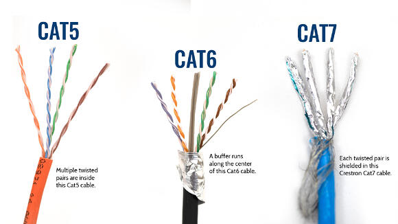
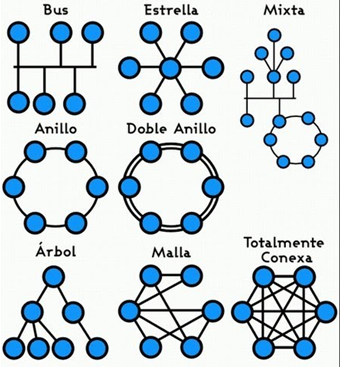
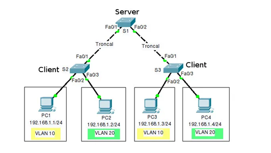
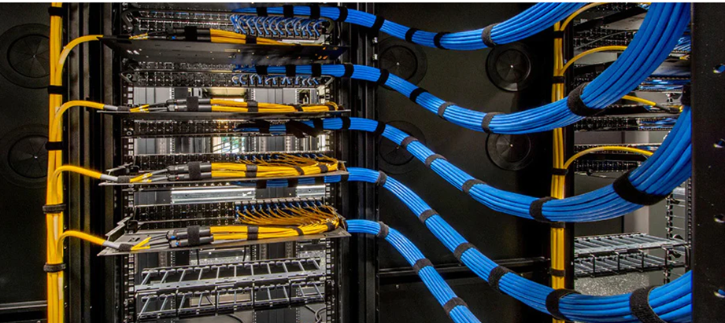

Tipos de Cableado para VLAN
1. Cable UTP (Par Trenzado Sin Blindaje)
- Más común: Es el tipo de cable más utilizado debido a su flexibilidad, bajo costo y facilidad de instalación.
- Categorías: Cat5e, Cat6, Cat6a y Cat7, cada una con diferentes velocidades y distancias de transmisión.
- Ideal para: La mayoría de las redes de oficina y hogar.
2. Cable FTP (Foil Twisted Pair)
- Con blindaje: Cada par de hilos está envuelto en una lámina de aluminio para reducir interferencias.
- Mayor protección: Ofrece una mejor protección contra interferencias electromagnéticas que el UTP.
- Uso: Se utiliza en entornos con mucho ruido eléctrico o cuando se requiere una mayor seguridad en la transmisión de datos.
3. Cable STP (Shielded Twisted Pair)
- Mayor protección: Cada par de hilos y el conjunto de pares están envueltos en una malla de metal para una mayor protección.
- Rendimiento: Ofrece un rendimiento superior al UTP y FTP en entornos muy ruidosos.
- Costo: Es más costoso y menos flexible que los cables UTP y FTP.
- Uso: Se utiliza en aplicaciones industriales y en entornos donde la integridad de los datos es crítica.
4. Cable de Fibra Óptica
- Transmisión de luz: Utiliza pulsos de luz para transmitir datos.
- Inmunidad al ruido: No es susceptible a interferencias electromagnéticas.
- Alta velocidad: Capaz de transmitir datos a velocidades muy altas.
- Distancia: Permite cubrir distancias mucho mayores que los cables de cobre.
- Uso: Se utiliza en redes de área extensa (WAN), centros de datos y aplicaciones que requieren altas velocidades y largas distancias.


Instalación Correcta de Diferentes Tipos de Cable
La instalación correcta del cableado es fundamental para garantizar el rendimiento y la durabilidad de una red. A continuación, te proporcionaré una guía general para la instalación de los tipos de cable más comunes en redes de datos:
Herramientas Necesarias:
- Pelacables: Para retirar la cubierta exterior y el aislamiento de los cables.
- Crimpadora: Para asegurar los conectores RJ45 en los extremos de los cables.
- Tester de cables: Para verificar la continuidad y el cableado correcto.
- Destornilladores: Para abrir paneles de conexión y realizar ajustes.
- Tijeras para cortar cables: Para cortar los cables a la medida adecuada.
Pasos Generales para la Instalación:
- Planificación: Diseña un diagrama de la red para determinar la ubicación de los dispositivos y la longitud de los cables necesarios.
- Preparación de los cables:
- Mide y corta los cables a la longitud requerida, dejando suficiente margen para los conectores.
- Retira la cubierta exterior del cable utilizando el pelacables.
- Separa los pares de hilos y ordénalos según el estándar de cableado (EIA/TIA 568A o 568B).
- Crimpado de conectores:
- Inserta los hilos del cable en el conector RJ45 siguiendo el orden establecido en el estándar elegido.
- Asegúrate de que los hilos estén completamente insertados y no estén doblados.
- Utiliza la crimpadora para asegurar el conector al cable.
- Conexión de los dispositivos:
- Conecta los cables a los puertos de los dispositivos (switches, routers, computadoras) correspondientes.
- Verifica que los conectores estén bien asegurados.
- Prueba de la conexión:
- Utiliza un tester de cables para verificar la continuidad y el cableado correcto.
- Realiza pruebas de ping entre los dispositivos conectados para asegurar la comunicación.
Consideraciones Específicas para Cada Tipo de Cable:
- UTP: Es el más fácil de instalar. Asegúrate de seguir el estándar de cableado elegido y de no doblar los hilos excesivamente.
- FTP: Requiere más cuidado al retirar la lámina de aluminio que protege los pares de hilos. Asegúrate de que la lámina no se dañe y de que esté conectada a tierra si es necesario.
- STP: Similar al FTP, pero con una malla metálica adicional. Requiere una instalación más cuidadosa y puede requerir herramientas especiales.
- Fibra óptica: Requiere herramientas y conocimientos especializados. Es importante evitar doblar excesivamente la fibra óptica y protegerla de la luz.
Consejos Adicionales:
- Seguridad: Siempre desconecta los equipos de la fuente de alimentación antes de realizar cualquier conexión.
- Organización: Mantén los cables ordenados y etiquetados para facilitar la identificación y el mantenimiento.
- Protección: Protege los cables de daños físicos y ambientales.
- Normas: Cumple con las normas de instalación eléctrica y de seguridad.
Importante: Si no te sientes seguro realizando la instalación, consulta a un profesional. Una instalación incorrecta puede afectar el rendimiento de tu red y causar problemas de seguridad.

¿Cuál es la diferencia entre un cable Cat5e y Cat6?
La principal diferencia entre un cable Cat5e y Cat6 radica en su rendimiento y capacidad de transmisión de datos.
- Cat5e: Diseñado para velocidades de hasta 1 Gbps, es más flexible y económico. Sin embargo, su ancho de banda limitado puede ser un cuello de botella en redes más exigentes.
- Cat6: Ofrece un mayor ancho de banda, permitiendo velocidades de hasta 10 Gbps. Es más rígido y costoso, pero garantiza un rendimiento superior y menor interferencia.
En resumen, si necesitas velocidades de hasta 1 Gbps y tienes un presupuesto limitado, Cat5e puede ser suficiente. Pero si requieres velocidades superiores o necesitas una red más estable y robusta, Cat6 es la mejor opción.

Topologías de Cableado en VLAN

- Estrella: La topología más común en las redes LAN. Cada dispositivo se conecta a un switch central.
- Bus: Los dispositivos se conectan a un cable común. Menos flexible y más susceptible a fallos.
- Anillo: Los dispositivos se conectan en un anillo cerrado. Ofrece redundancia y tolerancia a fallos.
Protocolos de Enrutamiento en VLAN
- VLAN trunking: Permite transportar múltiples VLANs en un solo enlace físico.
- Protocolos de enrutamiento: OSPF, RIP, BGP se utilizan para enrutar el tráfico entre VLANs.

Consideraciones Adicionales
- Calidad de los componentes: Utiliza conectores y herramientas de calidad para garantizar una instalación adecuada.
- Normativas: Cumple con las normativas locales y estándares de la industria.
- Mantenimiento: Realiza un mantenimiento preventivo para asegurar el correcto funcionamiento de la red.

En resumen, la elección del cableado para una VLAN dependerá de factores como la distancia, la velocidad requerida, el entorno y el presupuesto. Al evaluar estas variables y considerar las diferentes opciones disponibles, podrás seleccionar el cableado más adecuado para tu red.